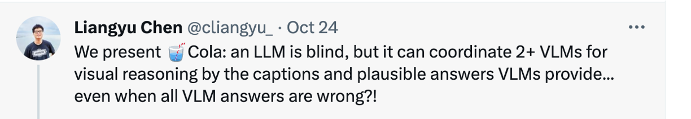
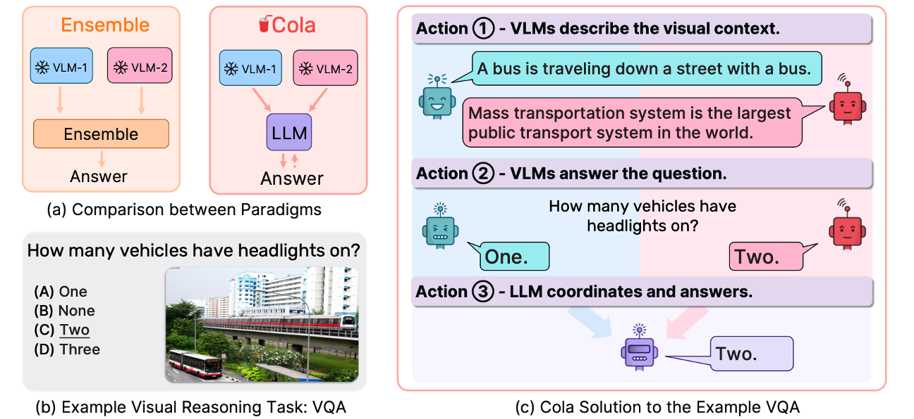
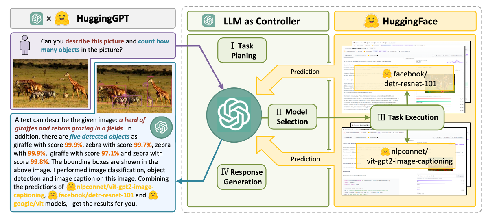
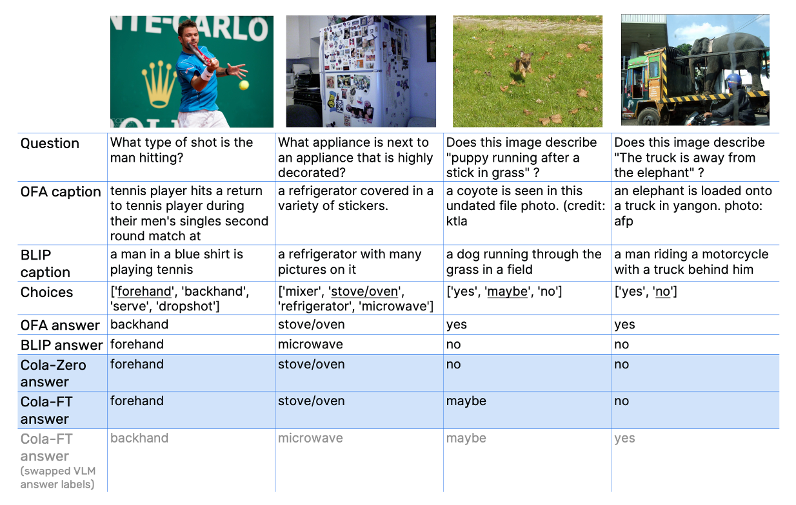
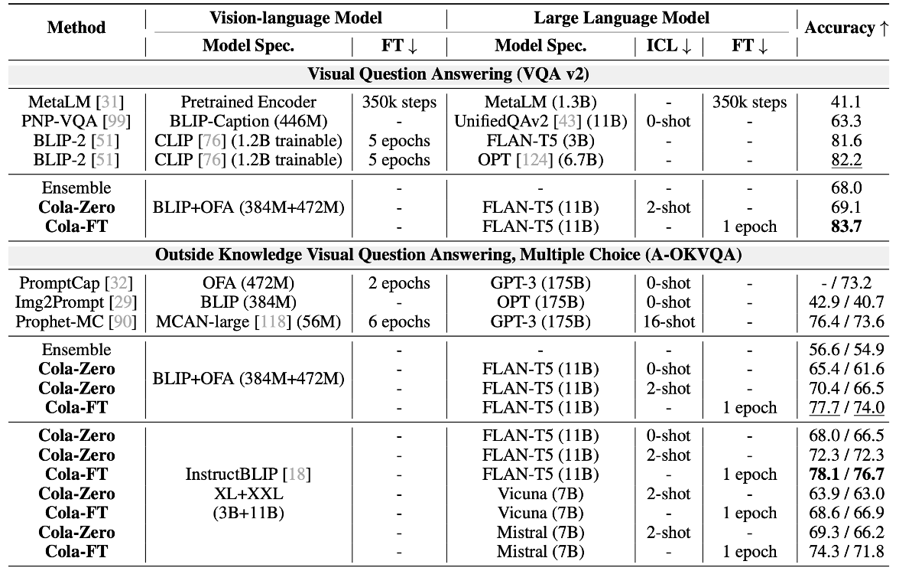
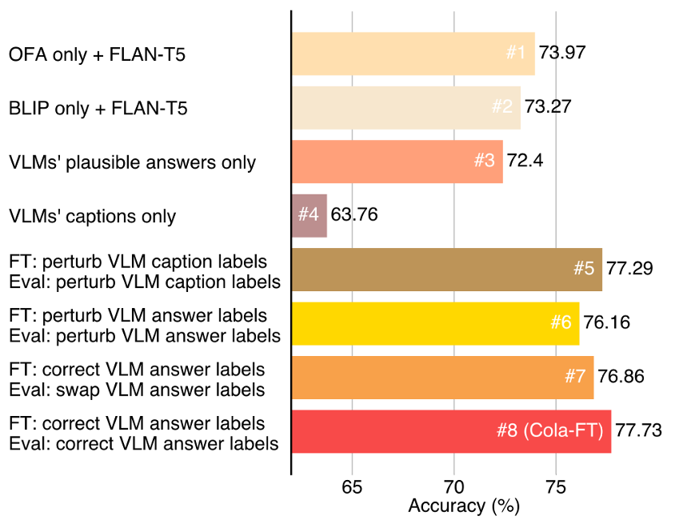

论文：Large Language Models are Visual Reasoning Coordinators
作者：Chen, Liangyu, Bo Li, Sheng Shen, Jingkang Yang, Chunyuan Li, Kurt Keutzer, Trevor Darrell, and Ziwei Liu
发表：NeurIPS 2023
简介：
视觉推理需要多模态感知和对世界的常识认知。最近，人们提出了多种视觉语言模型（VLM），它们在不同领域都具有出色的常识推理能力。
然而，如何利用这些互补视觉语言模型的集体力量却鲜有人问津。现有的方法（如集合）仍难以将这些模型与所需的高阶通信聚合在一起。本文提出了一种协调多个 VLM 进行视觉推理的新范式—Cola。大型语言模型（LLM）可以通过促进自然语言交流来有效协调多个 VLM，从而利用它们各自不同的互补能力。
实验证明，指令微调变体 Cola-FT 在视觉问题解答 (VQA)等一系列推理任务上取得了SOTA。此外还证明了上下文学习变体 Cola-Zero，在不进行微调的情况下，也表现出了极具竞争力的性能。

背景：
文章本身非常简单，文章引起的讨论最后可以多聊一会，首先说到visual reasoning 大家想到的第一个任务是visual question answering。
像这个就是一个VQA — how many vehicles have headlights on? 这样一种简单的以问题-图片还有回答，三个要素构成一个提问的形式就是VQA 视觉问答。这篇文章的任务就是以VQA为代表的一类视觉问答任务
虽然语言模型在做决策表现出色，但在处理文本以外的输入方面存在局限。它们无法直接处理图像、声音等其他模态信息。这篇文章第一次尝试用llm和多个vlm之间进行沟通，一起解决visual reasoning。

它设计了一个新的范式：假如有一个语言模型和两个视觉模型。语言模型充当的角色就是当作一个coordinater去最终决定答案（这里有一个点就是，cola是会对answer进行回传的，也就是有ft的过程）。
然后作者说新的范式在一些下游任务上取得了SOTA，因为这篇文章是今年4/5月，估计现在不是SOTA了（Llama2的发布）。
相关工作：
类似将 LLM 作为Coordinator/Controller的思想在先前已经有体现。
与HuggingGPT不同点:
通过LLM进行任务分配
不同的AI models 承担不同的工作 (heterogeneous models)
根据社区里(HuggingFace, Azure…)的模型描述进行模型的挑选

贡献点：
- Cola：一种新颖的范例，利用语言模型作为多个视觉语言模型之间的协调者，整合它们各自的优势进行视觉推理。
- 最先进的性能： Cola在一系列具有挑战性的视觉推理任务和数据集上达到了SOTA。
- 系统分析：通过实验揭示了Cola如何理解指令内容，然后协调这些内容来捕捉令人印象深刻的视觉推理能力。
实验：
定性实例：
语言模型有知人善用的能力，比如假设在体育这个类型问题上语言模型偏爱BLIP这个模型。
作者做了个简单的验证，将视觉模型给出的说明或者答案打乱，比如OFA给出的答案写成BLIP给出的答案，发现语言模型还是选择了BLIP的答案。

定量实验：
可以看到 Cola-FT 在四个数据集（A-OKVQA、OK-VQA、e-SNLI-VE、VSR）上实现了最先进的（SOTA）性能，只需1个epoch的指令调整和一个中等大小的语言模型。

消融实验：
消融实验结果验证了Cola模型在协调多个视觉语言模型（VLMs）方面的有效性。
在A-OKVQA验证集上，单个VLM（没有FLAN-T5的情况下）的性能为BLIP为50.83%，OFA为54.75%。为了验证多个VLM协作的效果，首先通过剔除Cola-FT的单个VLM变体，即#1（只有OFA，没有BLIP）和#2（只有BLIP，没有OFA），结果显示它们在性能上明显落后于Cola-FT。
随后的实验中，作者剔除了VLM的标题和合理答案，以及通过扰动标题标签等方式进行了关键验证步骤。实验证明，合理的答案对于帮助语言模型回答视觉问题更为重要。通过扰动VLM标题标签，作者验证了这些标签对Cola-FT性能的影响，结果显示VLM标题标签的变化会降低Cola-FT的性能。总体而言，作者强调Cola模型性能的提升主要来自于BLIP和OFA之间的协作，而非语言模型FLAN-T5的强大推理能力。

讨论：
作者只finetune了语言模型
Meta-segment anything 厉害的一个点，做了一个大的数据库 很多lable靠它的模型去自动标注，以后是不是有可能用lm去校准或者扩展一下vlm的数据label。用强模型输出好的结果，去ft弱模型。
把数据集用自动化的模式标注，在ft的时候，把vlm也ft一下，获得一些提高
✉️ zjuvis@cad.zju.edu.cn